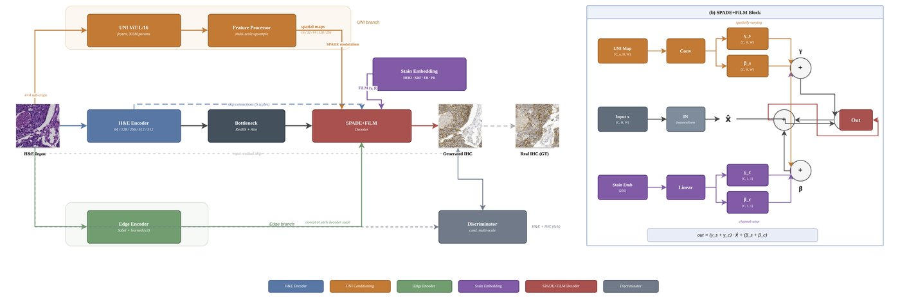
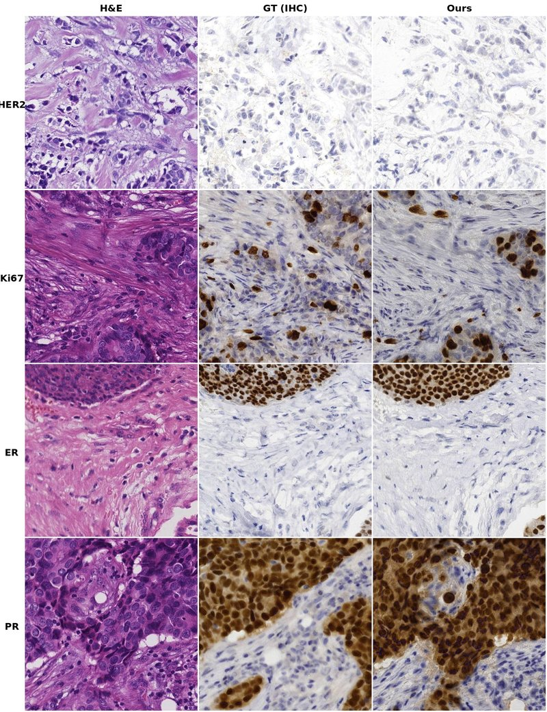
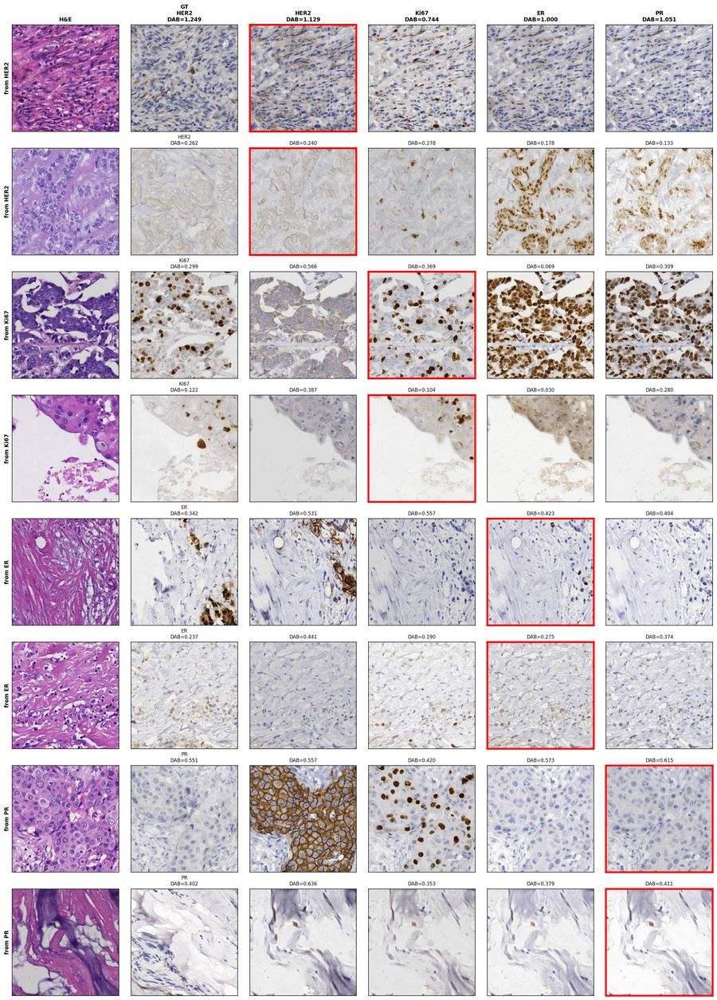
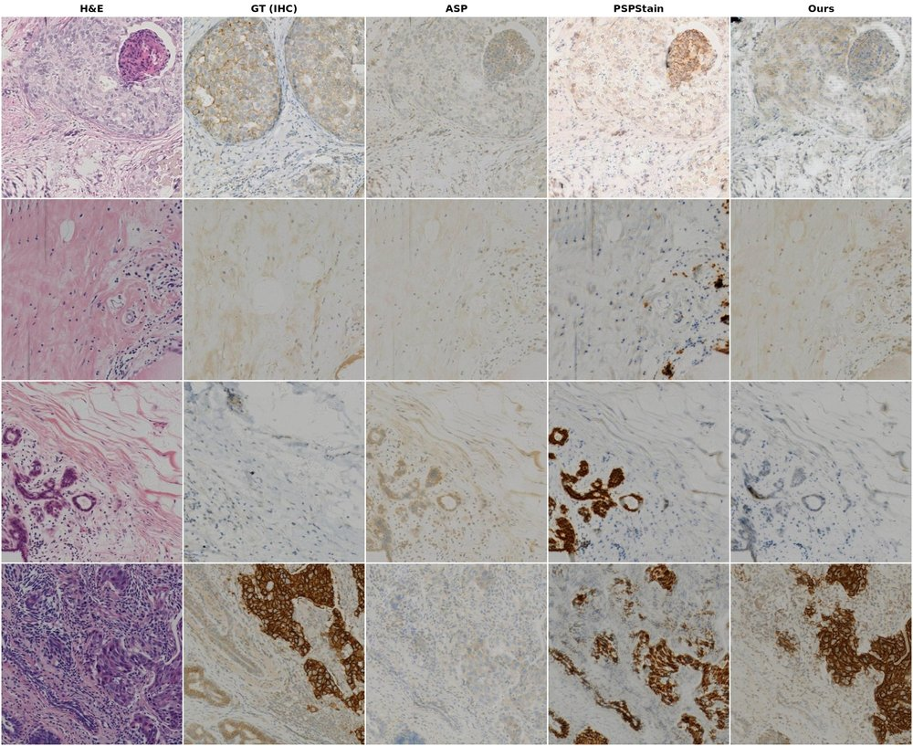

Virtual Immunohistochemistry Staining from H&E using Foundation Model Spatial Conditioning
We present UNIStainNet, a deep learning framework for virtual immunohistochemistry (IHC) staining from standard hematoxylin & eosin (H&E) histopathology images. Our approach uses a SPADE-UNet generator conditioned on dense spatial features from a frozen UNI pathology foundation model (ViT-L/16), enabling the generator to leverage fine-grained tissue morphology for accurate stain prediction. A FiLM-based stain embedding allows a single unified 42M-parameter model to generate all four clinically important breast cancer biomarkers — HER2, Ki67, ER, and PR — in a single forward pass. Our misalignment-aware loss suite (perceptual loss, DAB intensity supervision, unconditional discriminator) is specifically designed for the inherent spatial shifts between consecutive tissue sections used for training. UNIStainNet achieves state-of-the-art results on both the BCI and MIST benchmarks, with Pearson-R > 0.92 across all four stains.
Dense 32×32 spatial tokens from a frozen UNI pathology foundation model provide fine-grained morphological context at every decoder scale via SPADE normalization.
A single model generates all 4 IHC stains through FiLM-based stain embeddings, learning shared morphological representations across biomarkers.
Training pairs from consecutive tissue sections have inherent 10–50 pixel shifts. Our loss suite (LPIPS, DAB intensity, unconditional discriminator) handles this gracefully.
10% class and UNI dropout during training enables tunable generation strength at inference time via guidance scale.
The H&E input is encoded by a convolutional encoder while a frozen UNI ViT-L/16 extracts dense spatial features via 4×4 sub-crop tiling. The SPADE+FiLM decoder modulates each layer using both spatially-resolved UNI features (via SPADE) and stain-specific embeddings (via FiLM), producing the target IHC stain in a single forward pass.

| Stain | FID ↓ | KID×1k ↓ | Pearson-R ↑ | DAB KL ↓ |
|---|---|---|---|---|
| HER2 | 34.5 | 2.2 | 0.929 | 0.166 |
| Ki67 | 27.2 | 1.8 | 0.927 | 0.119 |
| ER | 29.2 | 1.8 | 0.949 | 0.182 |
| PR | 29.0 | 1.1 | 0.943 | 0.171 |
From a single H&E input, UNIStainNet generates all four IHC stains. The model correctly produces membrane staining patterns for HER2, nuclear punctate patterns for Ki67, and diffuse nuclear staining for ER and PR.

Each row uses H&E inputs originally paired with a specific stain (shown with ground truth) and generates all four stains from the same H&E. The diagonal (red-bordered) shows the matched stain; off-diagonal entries demonstrate the model's ability to generate stains it was never explicitly paired with for that tissue.

Compared to ASP and PSPStain, UNIStainNet produces more accurate staining intensity and spatial patterns. ASP often generates near-zero DAB signal (appearing mostly blue), while our method preserves the expected brown chromogen patterns.

The 512×512 H&E input is divided into a 4×4 grid of 128×128 sub-crops, each resized to 224×224 and passed through a frozen UNI ViT-L/16 (pretrained on 100M+ histopathology patches). The 14×14 patch tokens from each sub-crop are reassembled into a 56×56 spatial grid and adaptively pooled to 32×32, yielding 1,024 spatially-resolved 1024-dimensional tokens.
At each decoder scale, the UNI spatial features are projected to produce per-pixel scale (γ) and shift (β) parameters that modulate instance-normalized activations. Stain embeddings provide an additional channel-wise FiLM modulation, allowing the same decoder weights to produce different stains.
Designed for the consecutive-section misalignment problem:
| Loss | Purpose | Misalignment Robustness |
|---|---|---|
| LPIPS (Perceptual) | Structural similarity | Compares at 128px feature level |
| DAB Intensity | Stain signal accuracy | Global intensity, position-invariant |
| Unconditional Discriminator | Realistic appearance | No spatial conditioning on GT |
| Gram Style | Texture statistics | Matches statistics, not positions |
Breast cancer treatment decisions are driven by molecular subtyping based on four IHC biomarkers. Each requires a separate tissue section, consuming precious biopsy material. Virtual staining could conserve tissue, reduce turnaround time, and enable retrospective biomarker analysis on archival H&E slides.
| Marker | Staining Pattern | Clinical Role |
|---|---|---|
| HER2 | Membrane (circumferential) | Targeted therapy eligibility (trastuzumab, T-DXd) |
| Ki67 | Nuclear (% positive nuclei) | Proliferation index; Luminal A vs B distinction |
| ER | Nuclear | Endocrine therapy eligibility |
| PR | Nuclear | ER pathway functionality; prognosis refinement |
Try UNIStainNet on the interactive demo hosted on Hugging Face Spaces. Browse pre-computed results or upload your own H&E images (GPU required for live inference).
Launch Demo